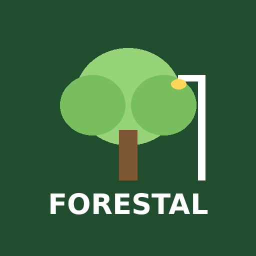
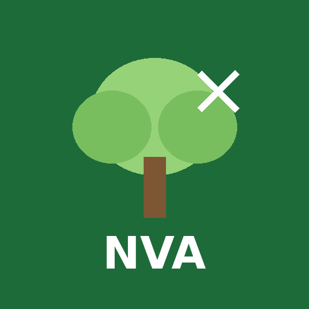
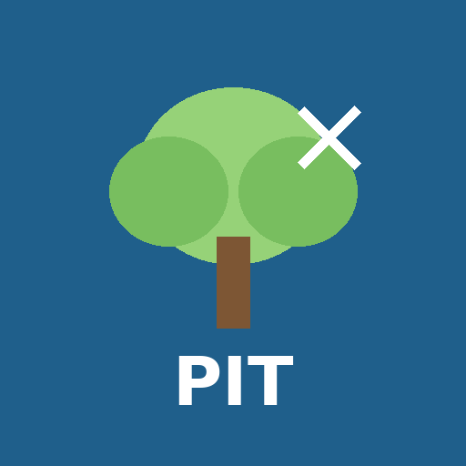
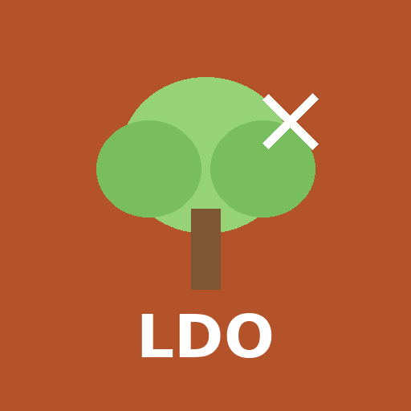

Apps de campo
Abra la app y, en Chrome, toque ⋮ → Agregar a pantalla principal para instalarla. Cada una se instala por separado y funciona sin internet.
Ingeniería

Forestal · Inventario y Podasmantenimiento01.github.io/forestal/
Cuadrillas de poda

Podas Neivamantenimiento01.github.io/neiva/

Podas Pitalitomantenimiento01.github.io/pitalito/

Podas La Doradamantenimiento01.github.io/ladorada/